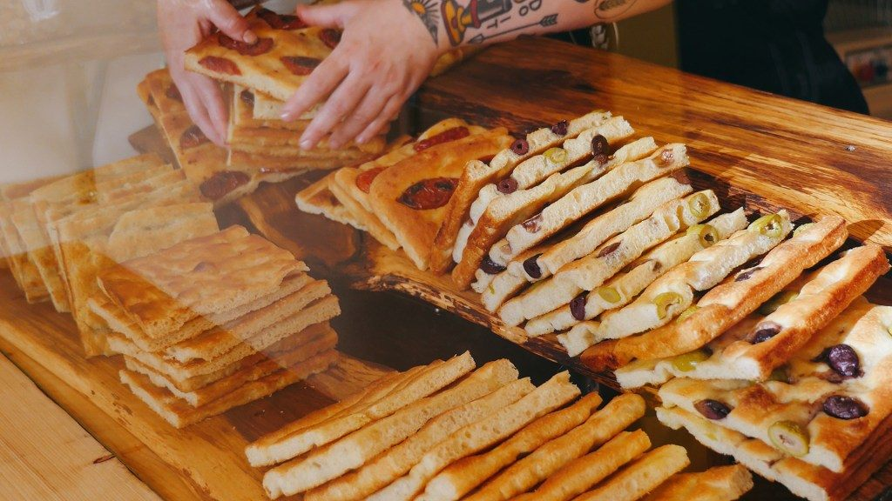
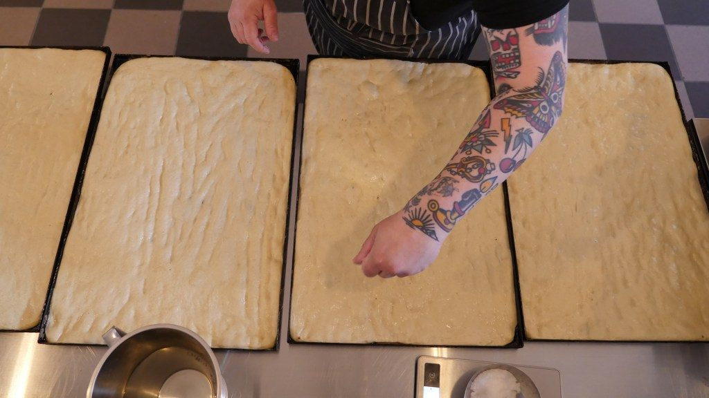
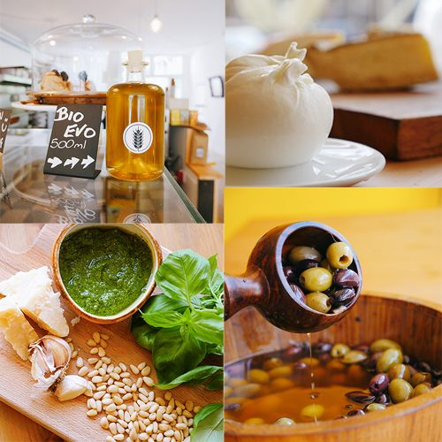
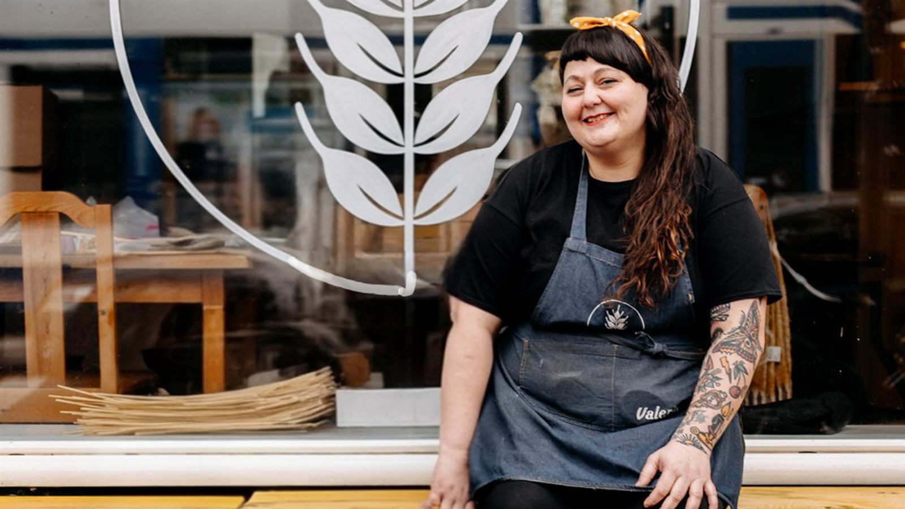
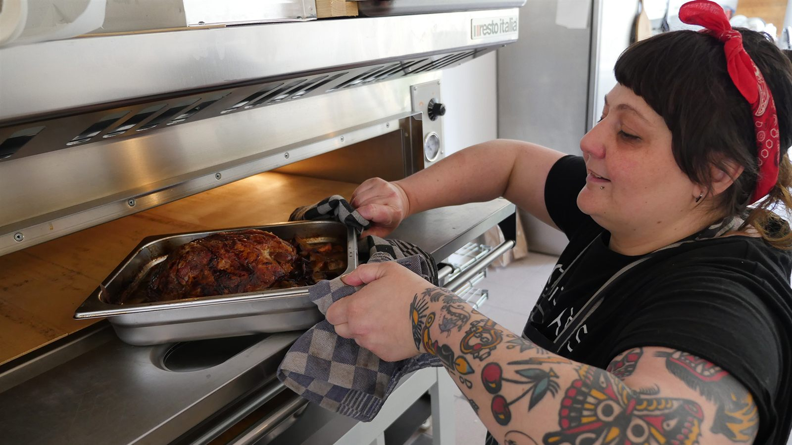
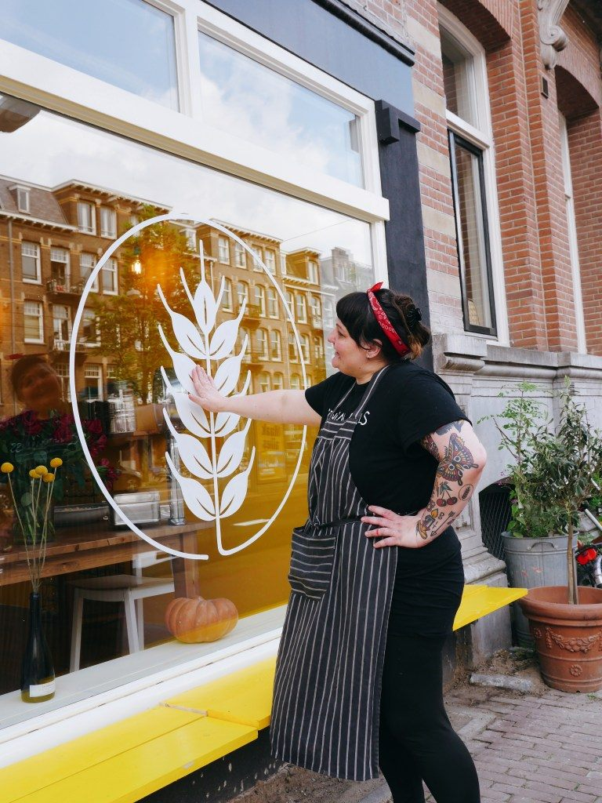
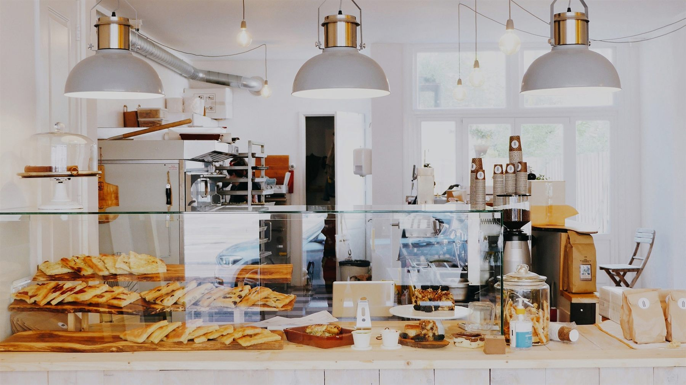

Focacceria Amsterdam
Handgemaakte focaccia genovese aan de Overtoom. Krokant van onder, luchtig vanbinnen en rijk aan olijfolie, zoals in Genua. Uit een zero waste keuken.
Woensdag t/m zondag 11:00 tot 17:00, of tot alles op is
Deze week in de toonbank
Elke dag de vaste focaccia's en een focaccia special die steeds anders is. Op een paar dagen ligt er iets extra's.
Woensdag
Focaccia's en de special van de dag
Donderdag
Focaccia's en de special van de dag
Vrijdag
Farinata, van kikkererwten
Zaterdag
Focaccia tipo Recco, met stracchino
Zondag
Kaneel-appelbroodje of pure chocolade met peer
Maandag en dinsdag gesloten. Op is op: we bakken tot het uitverkocht is.

Party box en grote bestellingen
Geen focaccia, geen feest. Een hele plaat van 60×40 cm wordt in 12 stukken gesneden en elk stuk nog eens in 4: samen 48 hapjes.
- € 35,20
Focaccia Natural
48 hapjes focaccia met olijfolie
- € 46,20
Focaccia Farcita
van elke soort 8 hapjes: natural, olive, nonna, cipolle, pomodori en antica
- € 54,45
Focaccia Special
48 hapjes van een focaccia special naar keuze
Flinke trek? Het kan ook groot
Liever gewone stukken dan hapjes? Dan krijg je een hele plaat van 60×40 cm, gesneden in 12 stukken.
- € 38,00
Focaccia tipo Recco
12 stukken focaccia met stracchino
- € 46,20
Focaccia tipo Recco Special
met stracchino, tomaat, ansjovis en kappertjes
Een grote bestelling plaatsen? Bel (06) 18 67 76 93 of mail ons.
Italiaanse producten om mee te nemen
Van onze passie naar jouw bord: echte Italiaanse smaken.

Pesto
- Pesto Genovese€ 6,80 / 100 g
- Pesto Rosso€ 6,80 / 100 g
Olie
- EVO nostrum€ 15,00 / 500 ml
- Chili-olie€ 8,50
- Olieblik€ 95,50 / 5 l
Zuivel
- Ricotta€ 6,00 / 250 g
- Stracchino€ 6,50 / 250 g
- Buffelmozzarella€ 7,50
- Roa havermelk€ 3,50
En verder
- Olijven€ 6,50
- Koffiebonen€ 10,50 / 250 g
- Focaccia-koekjes€ 3,00

Valeria, uit Genua
Valeria Lucente is geboren en getogen in Molassana, een levendige arbeiderswijk in Genua, waar eten altijd serieuze zaak is, zoals in de meeste Italiaanse families. Al jong werd ze verliefd op koken. Ze bracht talloze uren door in de rosticceria van haar familie, waar haar oma en ooms werkten. Daar werden bloem, olijfolie en passie onderdeel van haar dagelijks leven.
Ze studeerde aan de koksschool Marco Polo in Genua en werkte daarna in verschillende restaurants in de stad. Zo verdiepte ze haar kennis van de Ligurische keuken, en natuurlijk vooral van focaccia.
In 2009 verhuisde Valeria naar Amsterdam, waar ze als chef in verschillende restaurants werkte. Ze had een duidelijke droom: de echte smaken en tradities van Genua naar Nederland brengen.
In mei 2021 werd die droom werkelijkheid met de opening van Focacceria Amsterdam. Elke dag deelt Valeria een stukje van haar thuisstad: zacht, geurig en rijk aan olijfolie, net als in Genua.
Een eenvoudig deeg dat herinneringen, traditie en de geur van thuis met zich meedraagt. Sommige dingen hoef je niet opnieuw uit te vinden, alleen te respecteren.

Aan de Overtoom, vlak bij het Vondelpark
De Overtoom, in het hart van de Vondelbuurt, is een van de levendigste en meest echte buurten van Amsterdam. Op een paar stappen van het groen van het Vondelpark komen bewoners, creatievelingen en bezoekers elkaar vanzelf tegen.
Met zijn bruisende straatleven, zelfstandige winkels, cafés en sterke buurtgevoel laat de Overtoom de geest van Amsterdam zien: dynamisch, gastvrij en vol karakter. Een plek waar mensen stoppen voor een koffie, een praatje of iets wat net uit de oven komt. Daarom voelde het als het juiste thuis voor Focacceria Amsterdam: een buurt die kwaliteit, eenvoud en met zorg gemaakt eten waardeert. Net als focaccia geniet je van de Overtoom het best langzaam, hap voor hap.


Openingstijden
| Woensdag t/m zondag | 11:00 tot 17:00 |
|---|---|
| Maandag en dinsdag | Gesloten |
Of tot alles uitverkocht is.
Adres
Overtoom 4451054 KG Amsterdam
Contact
- Telefoon(06) 18 67 76 93
- E-mailfocacceriaamsterdam@gmail.com
- AdresOvertoom 445, 1054 KG Amsterdam
- Volg onsInstagram en Facebook